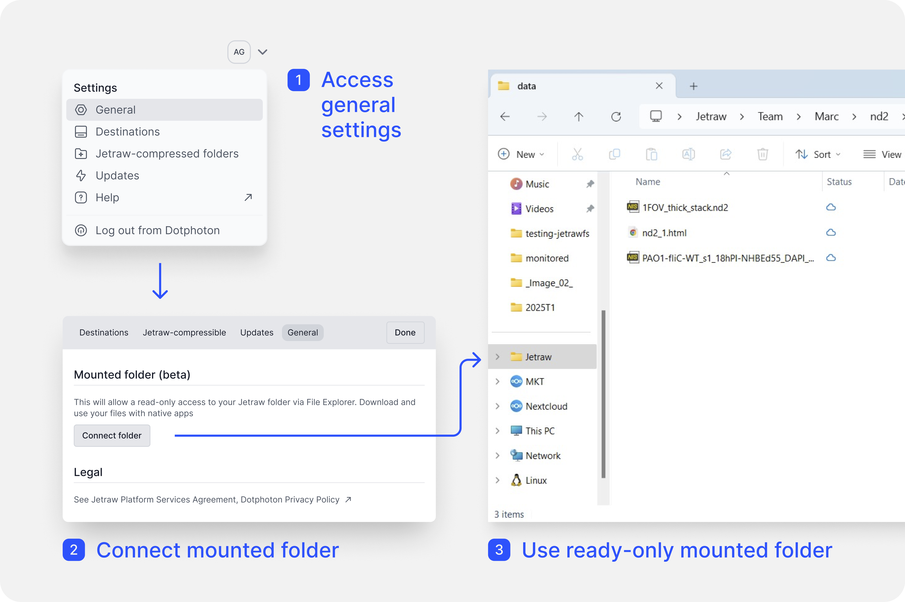

Installation¶
Latest Version: 1.3.0
Compatibility¶
Windows 10 or higher
Ubuntu 22.04 or higher
macOS Sonoma 14 or higher
New Users¶
Get Started: In the New User section, click the Get Started button to access the registration form: https://www.dotphoton.com/products/jetraw-platform/downloads
Complete the Form: Fill in all required details, including: - Data volume needs - Storage requirements - Types of systems you use This information helps us tailor our support to your specific needs.
Next Steps: After submitting the form, a member of our team will contact you shortly to discuss your requirements further.
Email Authentication: For testing purposes, you will receive an email with an authentication link. Follow the link to verify your email address and create a password.
Download the Installer: Once your email is authenticated, download the installer that matches your operating system.
{kind=link}
Existing Users¶
Download the Installer: Choose and download the installer that corresponds to your operating system: https://www.dotphoton.com/products/jetraw-platform/downloads
Log In: Use your existing account credentials to log in and access jetraw.
Install Jetraw: Download the appropriate file for your system and start installation.
Available installers¶
For M1/M2 chips (arm64): A .dmg file.
For Intel chips (x86): Another .dmg file.
For Windows: A .exe file.
For Ubuntu: A .tar.gz file.
Download the appropriate file for your system and extract its contents to your preferred directory.
Setting Up Jetraw¶
To begin using Jetraw, follow these steps:
Launch the Jetraw application and log in using your registered email account credentials. Once logged in, Jetraw will securely save your login details, so you won’t need to reenter your password each time you log back in.
Connect one or more AWS S3 buckets or local storage options. Refer to the sections below for detailed instructions on connecting storage locations.
Connecting Storage Destinations¶
To add a new storage destination in Jetraw:
Click on your initials in the top-right corner of the application interface.
Navigate to Destinations → Add Destination.
After clicking Add Destination, you can choose to add an AWS S3 bucket or a local storage.
For local storage:
If it is an external drive, make sure it is mounted (refer to the section below on how to mount a network storage).
Enter the name of the disk. The disk name must be in lowercase and should not contain any special characters.
Specify the disk path by browsing to the folder you want to use and opening it. This will allow you to add files inside that folder.
Optionally, add a custom label, which will be displayed in the Jetraw app.
Click Connect. Once connected, you will see a “connected” status indicator.
Important: After editing any fields, always press Enter to confirm your changes.
For an AWS S3 bucket:
Ensure that your AWS credentials are properly configured and that you have the necessary permissions to access the bucket.
Enter the bucket name, the URL (e.g., https://s3.eu-central-2.amazonaws.com/yourbucket), and a custom label to easily recognize and display the bucket.
Always press Enter after filling out each field.
Once added, the storage destination will appear in the list with a connection status indicator.
{kind=link}
You will also be able to view your colleagues’ storage setups:
For AWS S3 buckets: You will automatically be connected to the storage unless there is no internet connection or the credentials are incorrect.
For local storage: You need to browse to the folder where your colleague created the Jetraw storage. Look for the hidden file ending in .jetraw-storage.
For macOS users: If you cannot see the hidden file, press Command + Shift + . (dot) to toggle hidden file visibility.
For Windows users: Press Ctrl + Shift + H to reveal hidden files.
For Linux users: Open the file manager and press Ctrl + H to show hidden files.
Troubleshooting Storage Disconnection¶
For AWS S3 buckets: Disconnection is typically caused by an unstable internet connection or incorrect AWS credentials.
For local storage: The most common cause of disconnection is that the external drive is not mounted. Ensure that the storage is properly connected and mounted.
Enabling Jetraw Compression¶
To enable Jetraw compression, follow these steps:
Obtain Calibration Files¶
You need to have received one or more calibration files (.dat) from Dotphoton. These files contain specific information for the camera(s) used in your system. If you haven’t received these files, please contact get@dotphoton.com or your sales contact, providing your camera’s manufacturer, model, and, if possible, the serial number.
Add Calibration Files¶
Once you have the calibration file(s), add them to the calibration folder:
In the upper main panel of the Jetraw application, go to Configuration.
Click on Open Calibration Folder. This will open the folder where the calibration files should be stored.
Add the calibration files (.dat) to this folder.
Link Camera to a Folder¶
Next, decide which folder from your local system should be linked to the specific camera:
Click on your initials in the top-right corner to open the settings menu.
Navigate to Jetraw → Compressed Folders.
Click Add New Folder. This will open your local file system, allowing you to select the folder that contains data acquired with a particular camera (e.g., Camera A).
On the right side, select the camera from the list that corresponds to the calibration file(s) added earlier. Depending on your camera, you may also need to choose the acquisition mode (e.g., Roller vs. Shutter).
If the camera is a commercial one and the files are saved in DNG format, simply select the DNG option.

Confirm Compression¶
Now, every time you upload data from that specific folder, Jetraw will prompt you to confirm whether you want to compress the data using the calibration information from Camera A.
Specifying AWS Credentials for Jetraw¶
If you already have an AWS account and want to use your AWS S3 storage with Jetraw, you’ll need to specify your AWS credentials (Access Key ID and Secret Access Key). These credentials will allow Jetraw to connect to your S3 storage buckets, which will then be used as your default remote directory.
Below are two recommended options for making your AWS credentials available.
Choose the one that best suits your environment.
Option 1: (for macOS and Linux) Install aws-cli.
After installing the AWS CLI, use the following command to configure your credentials:
$ aws configure
You will be prompted to enter the following:
AWS Access Key ID = AKEXAMPLEAWS Secret Access Key = wJalrXUtnFEMI+K7MDENG/EXAMPLEKEYDefault region name = eu-central-1Default output format = json
Replace the example values (1-3) with your actual credentials and region.
For more detailed instructions, refer to the official AWS documentation: Configuring the AWS CLI.
Option 2: (for macOS only) Create a credentials file manually.
Open a terminal and type the following command:
$ open ~/.aws/credentials
This will open a text file. Enter your credentials in the following format, replacing the example values with your own, and then save the file:
[jfs] aws_access_key_id=AKEXAMPLE aws_secret_access_key=wJalrXUtnFEMI+K7MDENG/EXAMPLEKEY
For more information on managing your credentials, refer to AWS documentation: AWS Security Credentials.
Mounting a Network Drive (NAS)¶
Follow the steps below to mount a network drive, such as a NAS, on Windows, macOS, and Linux.
Windows¶
Open File Explorer.
Right-click on This PC and select Map network drive.
In the Drive drop-down menu, select a drive letter that you want to assign to the network drive.
In the Folder field, enter the network path to your NAS (e.g., \NAS-Nameshared-folder).
Check the box for Reconnect at sign-in if you want the drive to mount automatically after a reboot.
If necessary, enter your NAS username and password, then click Finish.
Your network drive will now appear under This PC in File Explorer.
macOS¶
Open Finder.
From the top menu bar, select Go → Connect to Server.
In the Server Address field, enter the network path to your NAS (e.g., smb://NAS-Name/shared-folder).
Click Connect.
Enter your NAS username and password if prompted.
The network drive will appear in the Finder sidebar under Locations.
Note
To automatically mount the drive on startup:
Open System Preferences → Users & Groups.
Select your user and go to the Login Items tab.
Drag and drop the mounted NAS folder from the Finder sidebar into the Login Items list.
Linux¶
Open your file manager (e.g., Nautilus on GNOME or Dolphin on KDE).
In the file manager’s address bar, enter the network path to your NAS (e.g., smb://NAS-Name/shared-folder).
Press Enter and enter your NAS credentials if prompted.
The network drive will appear in your file manager under Network or a similar section.
Note
To permanently mount the network drive, follow these steps:
Open a terminal.
Create a mount point, e.g., sudo mkdir /mnt/nas.
Mount the network drive with the following command:
sudo mount -t cifs -o username=your-username,password=your-password //NAS-Name/shared-folder /mnt/nas
To make the mount persistent across reboots, add the following line to /etc/fstab:
//NAS-Name/shared-folder /mnt/nas cifs username=your-username,password=your-password 0 0
Accessing Logs¶
To view the application logs in Jetraw, follow these steps:
In the top panel of the Jetraw application, click on Configuration.
From the dropdown menu, select Show Logs.
This will open a window displaying the logs, which can help in troubleshooting or monitoring application activity.

Jetraw Platform as a Mounted Folder¶
If you’d like to user Jetraw as a read-only mounted folder in your File Explorer, go to Settings → General and enable mounted folder. To disconnect your mounted folder later, simply go back to Settings → General.
{kind=link}
When the folder is mounted, it is read-only, meaning you can open and access files which will be automatically decompressed on the fly. However, in your local system, you will not be able to add new files or edit the folder structure.
Files in the mounted folder will display with a cloud icon next to the file name, indicating that the file is not downloaded locally. When you open a file, this icon will change to a green check mark.
While the mounted folder feature provides quick access to your data, for faster and more efficient data access, the recommended workflow is to download the data locally. Downloads will be faster thanks to compression, and files will be automatically decompressed upon arrival to local storage, resulting in faster data access overall.
This feature is currently available only on Windows.
Getting Started with Jetraw Platform GUI¶
To harness the power of Jetraw Platform, simply navigate to the Files Window upon launching the application. Here, you’ll be greeted with the /Root directory, setting you up to interact with your files and folders effortlessly. Whether it’s managing transactions in the Queue Window or diving deep with the File & Folder Inspector Panel, Jetraw Platform GUI is built to enhance your productivity.